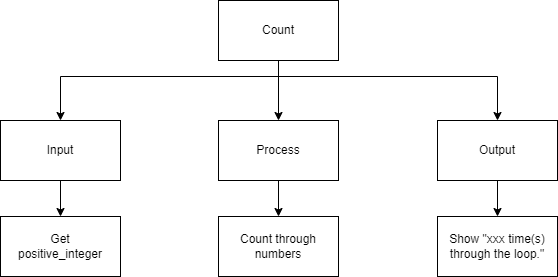

Do While Loop
The Do…While loop is a repetition structure where the statements inside the loop are executed at least once. Only then after being executed once, the Boolean expression is evaluated. If the Boolean expression is true, the body of the loop is executed again and the Boolean expression is re-evaluated once again. Note that this is different from the while loop, where the Boolean expression is at the top. Being at the top in a while loop, it is evaluated first and there might be a circumstance where the Boolean expression is false, right from the beginning. In this case the while loop will never happen. In a Do…While loop, the statements will always happen at least once.
Note that not all programming languages have a Do…While loop structure.
The Do…While loop (in most computer programming languages) takes the generic form of:
In this example program once again the user is asked to enter a positive integer and the program will count how many times it goes through the loop until it reaches that number. This time a Do…While loop is used.
Top-Down Design for Do…While loop
Flowchart for Do…While loop

Pseudocode for Do…While loop
Code for Do…While loop
1// Copyright (c) 2020 Mr. Coxall All rights reserved.
2//
3// Created by: Mr. Coxall
4// Created on: Sep 2020
5// This program uses a do ... while loop
6
7#include <stdio.h>
8
9int main() {
10 // this function uses a do ... while loop
11 int counter = 0;
12 int positiveInteger;
13
14 // input
15 printf("Enter how many times to repeat: ");
16 scanf("%d", &positiveInteger);
17 printf("\n");
18
19 // process & output
20 do {
21 printf("%d time(s) through the loop.\n", counter);
22 counter = counter + 1;
23 } while (counter < positiveInteger);
24
25 printf("\nDone.\n");
26 return 0;
27}
1// Copyright (c) 2020 St. Mother Teresa HS All rights reserved.
2//
3// Created by: Mr. Coxall
4// Created on: Sep 2020
5// This program uses a do ... while loop
6
7#include <iostream>
8
9int main() {
10 // this function uses a do ... while loop
11 int counter = 0;
12 int positiveInteger;
13
14 // input
15 std::cout << "Enter how many times to repeat: ";
16 std::cin >> positiveInteger;
17 std::cout << std::endl;
18
19 // process & output
20 do {
21 std::cout << counter << " time(s) through the loop." << std::endl;
22 counter = counter + 1;
23 } while (counter < positiveInteger);
24
25 std::cout << "\nDone." << std::endl;
26 return 0;
27}
1/* Created by: Mr. Coxall
2 * Created on: Sep 2020
3 * This program uses a do ... while loop
4*/
5
6using System;
7
8/*
9 * The Program class
10*/
11class Program {
12 static void Main() {
13 // this function uses a do ... while loop
14
15 int counter = 0;
16 int positiveInteger;
17
18 // input
19 Console.Write("Enter how many times to repeat: ");
20 positiveInteger = Convert.ToInt32(Console.ReadLine());
21 Console.WriteLine();
22
23 // process & output
24 do {
25 Console.WriteLine(counter + " time(s) through the loop.");
26 counter = counter + 1;
27 } while (counter < positiveInteger);
28
29 Console.WriteLine("\nDone.");
30 }
31}
1// No Do ... While loop in Go
1/*
2 * This program uses a do ... while loop
3 *
4 * @author Mr Coxall
5 * @version 1.0
6 * @since 2020-09-01
7 */
8
9import java.util.Scanner;
10
11public class Main {
12 public static void main(String[] args) {
13 // this function uses a do ... while loop
14
15 // create Scanner object for user input
16 Scanner scanner = new Scanner(System.in);
17
18 int counter = 0;
19
20 // input
21 System.out.print("Enter how many times to repeat: ");
22 String positiveIntegerStr = scanner.nextLine();
23 System.out.println();
24
25 // process & output
26 int positiveInteger = Integer.parseInt(positiveIntegerStr);
27
28 do {
29 System.out.println("%d time(s) through the loop.".formatted(counter));
30 counter = counter + 1;
31 } while (counter < positiveInteger);
32
33 // close the Scanner object
34 scanner.close();
35 System.out.println("\nDone.");
36 }
37}
1/* Created by: Mr. Coxall
2 * Created on: Sep 2020
3 * This program uses a do ... while loop
4 */
5
6const prompt = require("prompt-sync")()
7
8let counter = 0
9
10// input
11const positiveIntegerStr = prompt("Enter how many times to repeat: ")
12console.log("")
13
14// process & output
15const positiveInteger = parseInt(positiveIntegerStr)
16
17do {
18 console.log(`${counter} time(s) through the loop.`)
19 counter = counter + 1
20} while (counter < positiveInteger)
21
22console.log("\nDone.")
1# No Do ... While loop in Python